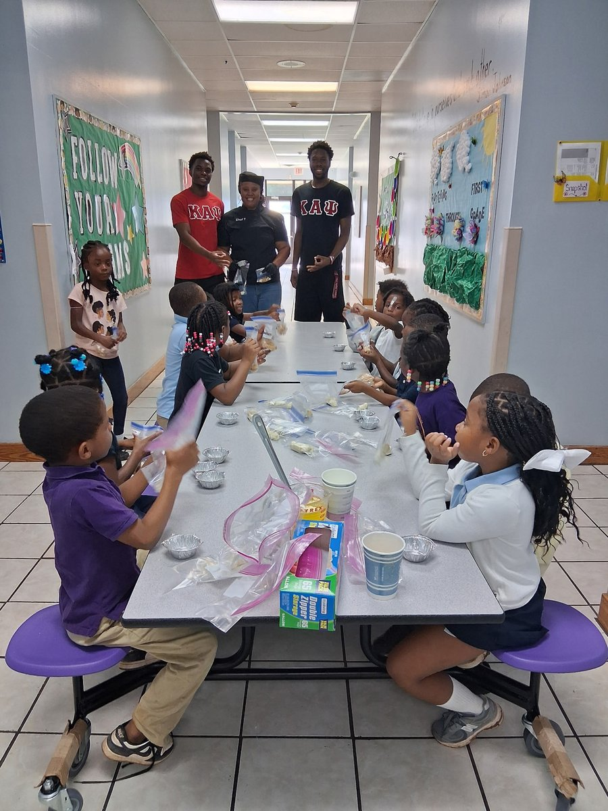
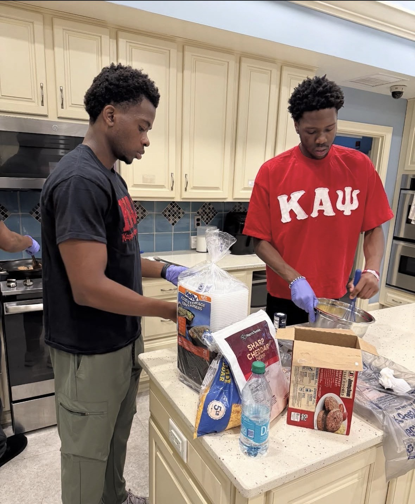
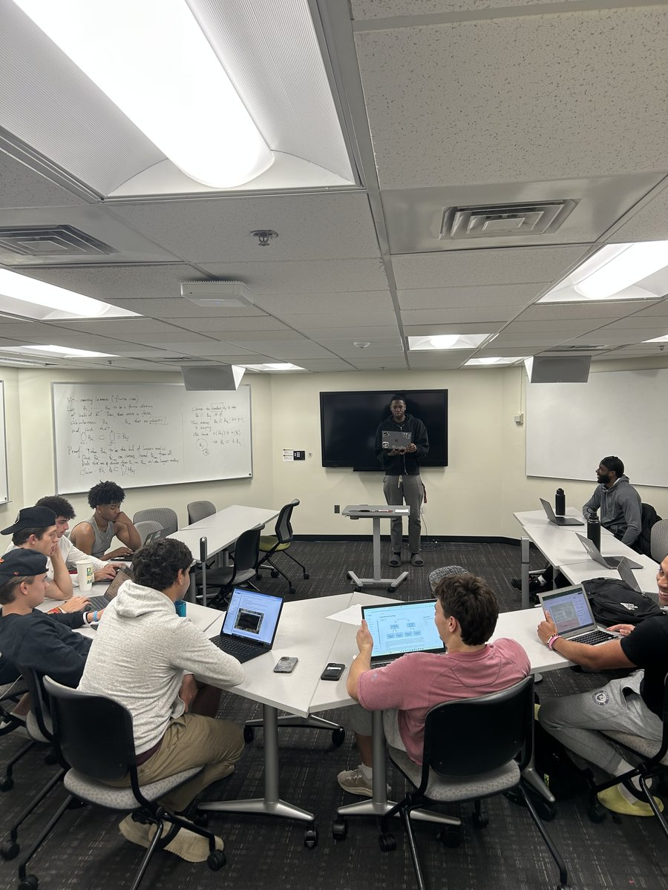
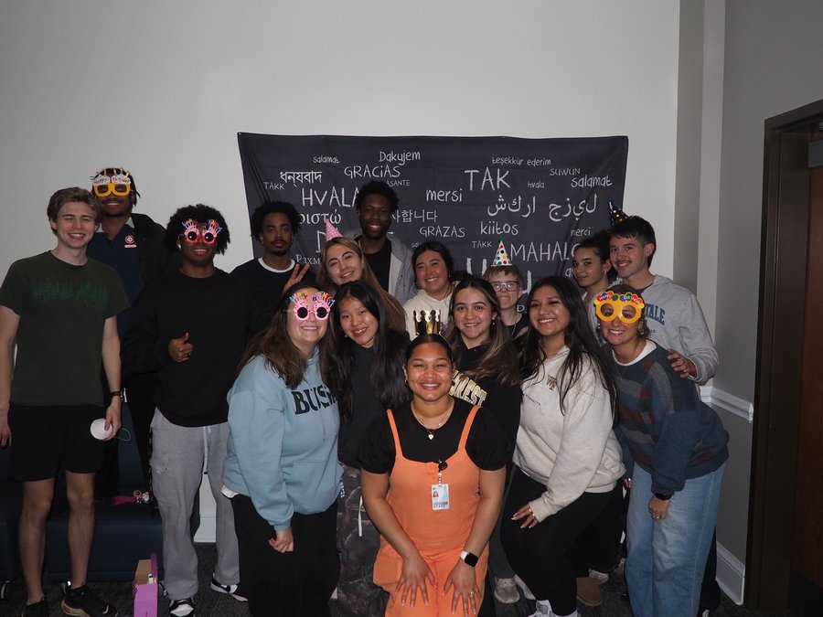
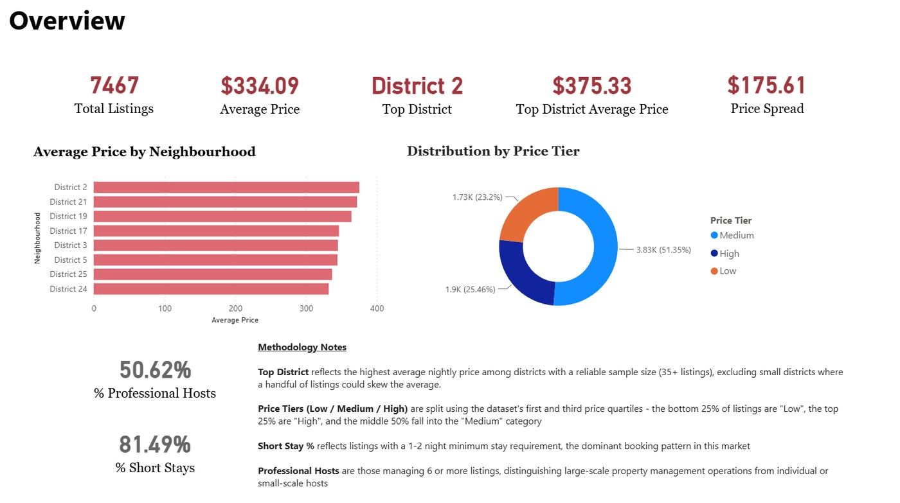
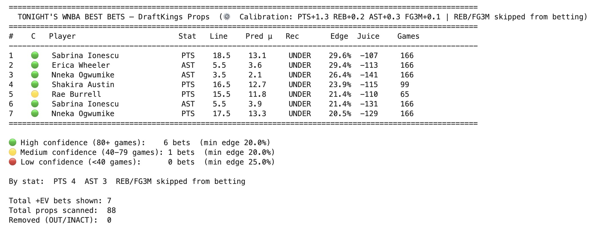
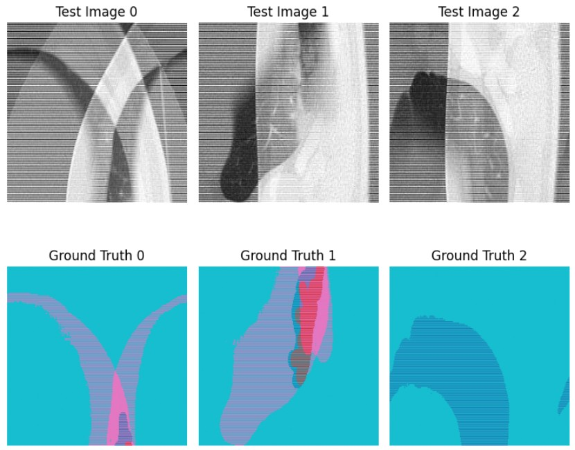

Sean Jones
Data-Driven · Futuristic · Developer
I build the pipelines, dashboards, and models that sit between raw data and the next move a business makes — currently sharpening that craft as a Business Analytics graduate student at Wake Forest University.
I was born and raised in South Florida, and for as long as I can remember, it has always been the why that has driven me. Not just what happened, but what caused it, and what that can mean for what comes next. As a kid, it showed up as an endless stream of questions. Today, it shows up as a career.
It was this curiosity that pulled me from a foundation in Computer Science into Business Analytics as a graduate student, sharpening the technical and interpersonal skills it takes to turn a question into an answer someone can act on. Outside the classroom, that same instinct shows up as leadership, roles that have less to do with data and more with listening, adapting, and finding the actual problem underneath what someone brings to you.
To me, every dataset is a record of decisions, behaviors, and outcomes waiting for analysis. That's what you'll find here, so when you look through this site, think of it as a few answers to questions I got curious enough to go chase down.
- Currently
- MSBA Candidate, Wake Forest University (May 2027)
- Focus
- Business Intelligence & Data Analytics
- Based in
- Winston-Salem, NC
- Core stack
- Python · SQL · Power BI · Excel
Leadership & professional experience
In my final year as an undergraduate member of Kappa Alpha Psi Fraternity Inc., I had the opportunity to serve as President of my school's chapter. Working alongside my fellow chapter members, I helped organize and host a range of service and community events throughout the year, an experience that deepened my love of collaboration and leading through it. Highlights included a recurring service event at the Ronald McDonald House, where we cooked meals for families staying there, and a visit to a local elementary school to read to students and put together the ingredients for the kids to make their own monkey bread. We balanced that service work with events built purely for fun and connection, including our annual roller-skating night, Roll Bounce, and a game night open to everyone.


Recognizing a growing interest among students in engaging with the rapidly evolving field of AI, a classmate and I set out to create a space where students could explore it together, leading to the founding of Wake Forest's Artificial Intelligence Club. The idea came easily; the process that followed didn't. Recruiting committed members and building a structure that kept people engaged taught me a lot about what it actually takes to turn an idea into a working organization. In my final year, our club had the opportunity to take on a faculty-advised research project focused on segmenting lung infections from CT scans.

As a Resident Advisor at Wake Forest, I served as a point of contact for 34 students, which meant a lot of listening before anything else, helping students navigate roommate conflicts, personal challenges, and the everyday friction of living in close quarters with people they sometimes didn't choose. Beyond the one on one side of the role, I worked with housing staff and campus partners to plan and run educational and community programs, aimed at building a residential community people actually wanted to be part of rather than just lived in. The role reinforced something I'd already been learning through my other leadership roles: that no two students, or two problems, needed the same approach, and being a good resource meant staying flexible rather than relying on a script.

Analytical project experience

Airbnb Pricing Intelligence Dashboard
Cleaned and structured raw Nashville listings data in Excel, then engineered a SQL (SQLite) transformation layer — aggregation views, window functions (RANK), subqueries — to segment districts by sample reliability and price tier. Built a Power BI dashboard revealing a 3-tier pricing structure, showing that top-priced districts draw their averages from a mix of medium- and high-tier listings rather than uniformly luxury inventory.

NBA / WNBA Player Props Prediction System
Built a PyTorch pipeline processing 70K+ game logs across 50+ engineered features to predict six stat categories for 470+ tracked players. Pulled real-time prop odds via The Odds API across four markets, applying head-to-head feature engineering and calibration-offset tuning, then used EV-based filtering to isolate high-edge wagers.

Lung Infection Segmentation from CT Imagery
Faculty-advised AI Club research project: a patch-based feedforward neural network built in TensorFlow/Keras for 4-class segmentation of lung infection regions in CT scans, tuned to hold up under severe class imbalance in the training data.